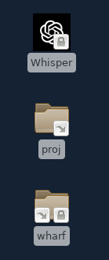
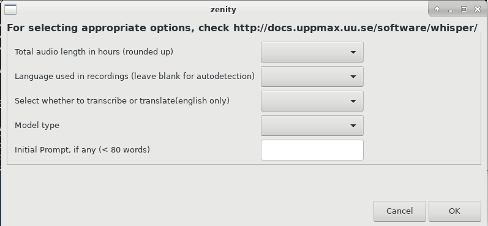
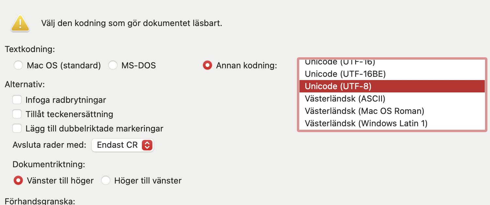

Whisper¶
Introduction¶
This guide provides instructions for loading and using OpenAI's Whisper, an automatic speech recognition system. Whisper is available on Bianca. It can either be used through a User Interface or loaded as a Module.
Glossary¶
SUPR account
UPPMAX account
GUI : Graphical User Interface for taking transcription/translation inputs.
WinSCP / FileZilla: user interface to send data from your computer to Bianca and vice-versa.
Terminal : Black text-based environment that is used for performing jobs.
Wharf: private folder in Bianca that is used to transfer data to and from your computer.
Proj: project folder in Bianca that is shared among all project members.
Job: A request for transcribing/translating one or many recordings.
Slurm: "job" handler.
Accessing your project¶
Following steps are derived from UPPMAX User Accounts:
Checklist
- SUPR account
- UPPMAX username and password
- UPPMAX two factor authentication.
-
Register an account on SUPR.
-
Apply for a project for sensitive data at Bianca.
-
Register an account for UPPMAX at SUPR by clicking "Request Account at UPPMAX" button. You will receive an UPPMAX username and password via email.
-
Setup two factor authentication for this newly created UPPMAX account.
-
Give adequate information while creating your proposal or follow this template.
-
Check access to your project on Bianca.
Application¶
Step 1: Data transfer from local computer to Bianca¶
- Transfer your data from your local computer to Wharf using WinSCP client (for Windows only) or FileZilla client (Mac, Windows or Linux). Instruction on how to do it is in their respective links.
Step 2: Transcribing/Translating¶
-
Login to Bianca. It requires your UPPMAX username (visible in SUPR), project name and two factor authentication code. Make sure you are inside SUNET for the link to work.
-
Right click on the Desktop and select "Open Terminal Here" and enter the following command on the terminal to load Whisper GUI, it creates
projandwharffolders on your Desktop along with a Whisper application icon.wharfcontains the data that was transferred in Step 1.
-
Select all the data that you transferred in
wharf, right click and copy it. Enter theprojfolder, right click and paste this data intoprojfolder. NOTE: if you drag and drop, it will cut-paste your data instead of copy-paste. (Next time you start transcribing/translating by logging in again to Bianca, you can start from this step and skip the previous one, sinceprojfolder is already created.) -
Click on Whisper application on Desktop. It would look like this:

-
Select appropriate options, or use the following for the best results:
Total audio length in hours: [give a rough average if transcribing files in bulk, rounding up to nearest hour]
Model: large-v2
Language used in recordings (leave blank for autodetection): If your language of choice unavailable, check the "Languages available" list for its availability and contact support
Step 3: Monitoring jobs¶
-
Monitor your job by entering
jobinfoon terminal. It tells if your job namedWhisper_xxxhas been submitted and/or running, wherexxxis the date and time of job submission. -
[Whisper_xxx].outthat gets created inWhisper_logsfolder insideprojfolder. This contains a progress bar for each file that you sent for transcribing/translating.
Step 4: Data transfer from project to local computer¶
-
Transfer your output results from
projfolder towharf. -
Use WinSCP/FileZilla like you did in Step 1.
Output files¶
By default you receive 5 types of output files for each file you transcribe/translate:
With timestamps: .srt, .vtt, .tsv
Without timestamps: .txt
With detailed model metadata: .json.
On Mac, .srt and .vtt can be opened in Word by:
Tap with two fingers. Select Encoding as "Unicode (UTF-8)". Change the name of the file like some_name.docx and change type of file to .docx. Open the file and then Save As a new file.

Advance settings
Use below features only if transcriptions/transl is not satisfactory and for less spoken languages or languages that are not having good resources online for understanding :
-
When asked for Initial Prompt, provide a list of comma separated words or sentences (less than 80 words) that describe what the recording is about or the words used by the speaker in the recording. It should be in written in same language as the language in spoken in the recordings.
-
Try switching to Model: large-v3.
-
Use combination of both 1 and 2.
-
If you are sure about the language used in the recording, use the 2 letter code from the list below when asked for it in the gui.
Languages available
Use the following 2 letter code to perform transcribing when asked in the GUI:
en: "english",
zh: "chinese",
de: "german",
es: "spanish",
ru: "russian",
ko: "korean",
fr: "french",
ja: "japanese",
pt: "portuguese",
tr: "turkish",
pl: "polish",
ca: "catalan",
nl: "dutch",
ar: "arabic",
sv: "swedish",
it: "italian",
id: "indonesian",
hi: "hindi",
fi: "finnish",
vi: "vietnamese",
he: "hebrew",
uk: "ukrainian",
el: "greek",
ms: "malay",
cs: "czech",
ro: "romanian",
da: "danish",
hu: "hungarian",
ta: "tamil",
no: "norwegian",
th: "thai",
ur: "urdu",
hr: "croatian",
bg: "bulgarian",
lt: "lithuanian",
la: "latin",
mi: "maori",
ml: "malayalam",
cy: "welsh",
sk: "slovak",
te: "telugu",
fa: "persian",
lv: "latvian",
bn: "bengali",
sr: "serbian",
az: "azerbaijani",
sl: "slovenian",
kn: "kannada",
et: "estonian",
mk: "macedonian",
br: "breton",
eu: "basque",
is: "icelandic",
hy: "armenian",
ne: "nepali",
mn: "mongolian",
bs: "bosnian",
kk: "kazakh",
sq: "albanian",
sw: "swahili",
gl: "galician",
mr: "marathi",
pa: "punjabi",
si: "sinhala",
km: "khmer",
sn: "shona",
yo: "yoruba",
so: "somali",
af: "afrikaans",
oc: "occitan",
ka: "georgian",
be: "belarusian",
tg: "tajik",
sd: "sindhi",
gu: "gujarati",
am: "amharic",
yi: "yiddish",
lo: "lao",
uz: "uzbek",
fo: "faroese",
ht: "haitian creole",
ps: "pashto",
tk: "turkmen",
nn: "nynorsk",
mt: "maltese",
sa: "sanskrit",
lb: "luxembourgish",
my: "myanmar",
bo: "tibetan",
tl: "tagalog",
mg: "malagasy",
as: "assamese",
tt: "tatar",
haw: "hawaiian",
ln: "lingala",
ha: "hausa",
ba: "bashkir",
jw: "javanese",
su: "sundanese",
yue: "cantonese"
Proposal template¶
Under the Basic Information section on NAISS SUPR, provide the following compulsory details pertaining to your project in the following fashion:
-
Project Title : Whisper service for [Name of the project]
-
Abstract: [What is the project about, give links, funding info, duration etc.]
-
Resource Usage: [Explain where transcriptions/translations are needed like interview recordings on device/ zoom or other forms of audio/video recordings from offline/online sources. Give the average and maximum number of recordings to be transcribed/translated. Give the average and maximum size of recordings in mins/hours. Mention if it is a transcribing or translation requirement. Mention the language spoken in the recordings, if known, and a rough estimate of number of recordings for each of these languages. Ignore the "core-hours" and "hours required to analyse one sample" requirement.]
-
Abridged Data Management Plan: [Address all points. Mention the recording file types example: .mp3, .mp4, .wav etc.]
-
Primary Classification: [Either follow the Standard för svensk indelning av forskningsämnen link given or search by entering the field of research such as 'Social Work', 'Human Geography' etc. ]
-
Requested Duration: [Mention the duration for which Whisper service is strictly required. Mentioning more duration than actually required might reflect negatively when a new allocation is requested for the same or new project next time. It is possible to request for a shorter duration of 1 month at first and then ask for a new one once the need arises again in the future.]
Module Loading
To load the Whisper module, run the following command:
This will also load the necessary dependencies, including python
and ffmpeg.
[jayan@sens2024544-bianca jayan]$ module list
Currently Loaded Modules:
1) uppmax 3) mp-tools/latest 5) FFmpeg/5.1.2
2) git/2.34.1 4) python/3.11.4 6) Whisper/0.5.1
Command-line¶
The whisper command can be used to transcribe audio files. For example:
Python¶
import whisper
# Load the model
model = whisper.load_model("base")
# Transcribe an audio file
result = model.transcribe("/path/to/audiofile.mp3")
# Output the transcription
print(result["text"])
Available Models¶
For making offline usage of Whisper more convenient, we provide pre-trained models as part of the Whisper module. You can list all the available models by:
[jayan@sens2024544-bianca jayan]$ ll /sw/apps/Whisper/0.5.1/rackham/models
total 13457440
-rw-rw-r-- 1 sw 145261783 Nov 10 14:22 base.en.pt
-rw-rw-r-- 1 sw 145262807 Nov 10 14:23 base.pt
-rw-rw-r-- 1 sw 3086999982 Nov 10 14:39 large-v1.pt
-rw-rw-r-- 1 sw 3086999982 Nov 10 14:40 large-v2.pt
-rw-rw-r-- 1 sw 3087371615 Nov 10 14:27 large-v3.pt
-rw-rw-r-- 1 sw 1528006491 Nov 10 14:24 medium.en.pt
-rw-rw-r-- 1 sw 1528008539 Nov 10 14:25 medium.pt
-rw-rw-r-- 1 sw 483615683 Nov 10 14:23 small.en.pt
-rw-rw-r-- 1 sw 483617219 Nov 10 14:23 small.pt
-rw-rw-r-- 1 sw 75571315 Nov 10 14:22 tiny.en.pt
-rw-rw-r-- 1 sw 75572083 Nov 10 14:22 tiny.pt